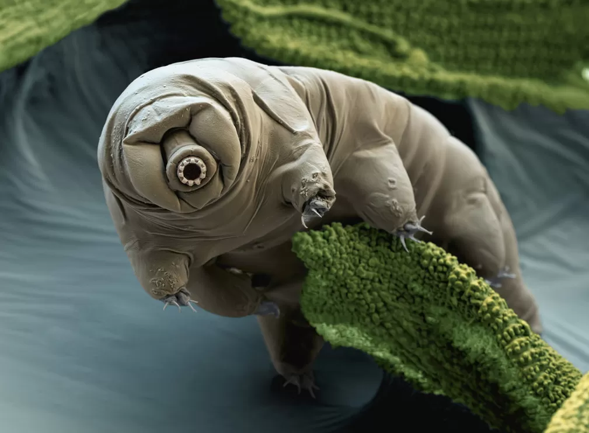
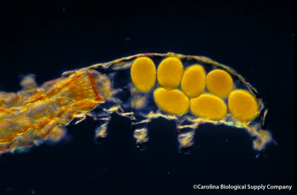
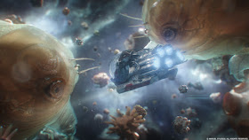

Tardígrados: Extraterrestres?
Descubra um pouco mais sobre os “ursos d’água”, para além de suas
fascinantes características de sobrevivência
Introdução
Os tardígrados (também conhecidos como ursos d’água) pertencem ao Filo
Tardigrada. Foram descobertos em 1773 por Johann August Ephraim Goeze e
nomeados em 1776 por Lazzaro Spallanzani como “il tardigrado” - “tardus
gradus”, do Latim, significa algo como “passo lento”. Seu habitat varia
entre semi-aquático e aquático e de acordo com a Universidade da
Flórida, há mais de 1300 espécies de tardígrados registradas. Sua origem
no planeta Terra data de mais de 500 milhões de anos - desde então,
sobreviveram às cinco principais extinções em massa de nosso planeta e
vêm sendo importantes na vanguarda de repovoamento de ecossistemas
hostis.

Características e mecanismos
O tamanho médio dos tardígrados está entre 0,1 e 0,5 milímetros, com
algumas espécies consideradas “gigantes” atingindo pouco mais de 1
milímetro. Sua locomoção é feita com o uso dos 4 pares de apêndices
(estruturas semelhantes a pernas, com quantidades variadas de garras nas
extremidades). A presença de quitina nessas estruturas e na pele, assim
como a muda (troca do exoesqueleto) são elementos que os tardígrados têm
em comum com os artrópodes, parentes distantes.
Reprodução:
A reprodução desses animais ocorre principalmente de forma sexuada,
durante a muda, e as colônias de tardígrados costumam estar na ordem
de milhões de “habitantes”. São considerados cosmopolitas, pois,
devido à baixa massa de seus resistentes ovos, foram capazes de
povoar todos os cantos da Terra.

Possuem sistema digestório completo e se alimentam principalmente de
algas, bactérias, fungos, células animais e outros tardígrados,
caracterizando uma dieta onívora. Ocorre um fenômeno curioso nos
tardígrados: grande parte de seu DNA é composta pelo DNA dos seres de
que se alimentam. Essa fração do material genético, conhecida como DNA
exógeno, é obtida por meio da transferência horizontal de genes e é
responsável por restaurar “buracos” de informação gerados durante
períodos de estresse do organismo (principalmente a criptobiose, que
será explicada em breve).
Entretanto, a característica mais interessante desses seres para o
público geral (e para muitas das pesquisas relacionadas a eles) é a
capacidade de sobreviver a fatores abióticos extremos. Dentre eles, é
possível listar:
- Temperaturas abaixo de -270°C e acima de 150°C;
- Pressão atmosférica muito alta e vácuo espacial;
- Altos índices de radiação UV;
- Falta de água e oxigênio.
Essas habilidades são possibilitadas pelo processo de redução do
metabolismo conhecido como criptobiose, normalmente na forma da
anidrobiose, em que há desidratação do organismo. Quando isso ocorre, o
tamanho do tardígrado é reduzido significativamente, com o recolhimento
dos apêndices para dentro de seu corpo e a criação de uma camada dupla
de cutícula em sua superfície.
Importância para a humanidade
Em diversas ocasiões, os tardígrados foram enviados para fora de nossa
atmosfera, e uma grande parcela dos seres enviados retornou com vida e
sem impactos da radiação em seus descendentes. Devido à capacidade de
sobreviver ao vácuo espacial, eles têm grande importância para as
missões espaciais e especulações sobre vida extraterrestre. O principal
questionamento que se levanta a respeito de formas de vida fora da Terra
se baseia na interpretação da característica fascinante citada como um
indício da sua possibilidade.
Outra área que pode se conectar cada vez mais aos tardígrados é a
biomedicina, com a possibilidade de usar proteínas presentes neles para
melhorar o armazenamento de fármacos e de amostras de seres vivos e
reduzir o stress oxidativo e danos causados ao DNA. Também está no
horizonte o estudo do envelhecimento humano a partir dos mecanismos
usados nos períodos de anidrobiose. Porém, ainda há muito para
descobrirmos a respeito dos tardígrados, especialmente em um nível
molecular.
Curiosidade:
-
Alguns tardígrados sobreviveram mais de 120 anos em musgo seco(!).
-
Os tardígrados tiveram uma aparição nas telas dos cinemas durante
um filme do herói da Marvel Homem-Formiga.
-
O ponto fraco dos tardígrados reside na exposição contínua a
temperaturas elevadas, algo que deve se intensificar nos próximos
anos com o aquecimento dos oceanos decorrente do aquecimento
global.

UTU
A UTU (União dos Tardígrados Unidos) é parte de um trabalho acadêmico de
divulgação científica de Biologia desenvolvido por alunos do primeiro
ano do Curso Técnico em Desenvolvimento de Sistemas do Instituto Federal
de Educação, Ciência e Tecnologia de São Paulo (IFSP) - Campus São
Paulo. Não temos fins lucrativos e nem vínculo empregatício com a
instituição e é justamente por isso que pedimos a sua contribuição na
divulgação de nosso projeto. Caso considere a existência da UTU algo
benéfico para os meios da Educação e da Ciência, compartilhe nossos
conteúdos com seus conhecidos e nos acompanhe nas redes sociais.
Ainda estamos em um processo de construção, e, por isso, algumas
funcionalidades do nosso site ainda não estão funcionando idealmente -
por exemplo, o compartilhamento via Whatsapp e Facebook. O contato
presente no rodapé da página está aberto para recebimento de comentários
e sugestões de como podemos melhorar.
![]()